Leveza Corporal
Correr com menos impacto, menos tensão e mais eficiência. Mobilidade articular, ativação do core, redução de sobrecarga. O resultado prático é menos força desperdiçada e mais fluidez.
Preparação física para corredores
Toda vez que você tenta ir além, o corpo diz que não.
Meses treinando. Pace igual. O problema não é esforço.
Cada ciclo cobra mais. O corpo que te trouxe até aqui não é o mesmo.
RaioX LARUN é gratuito · ~7 minutos · online · sem compromisso de matrícula
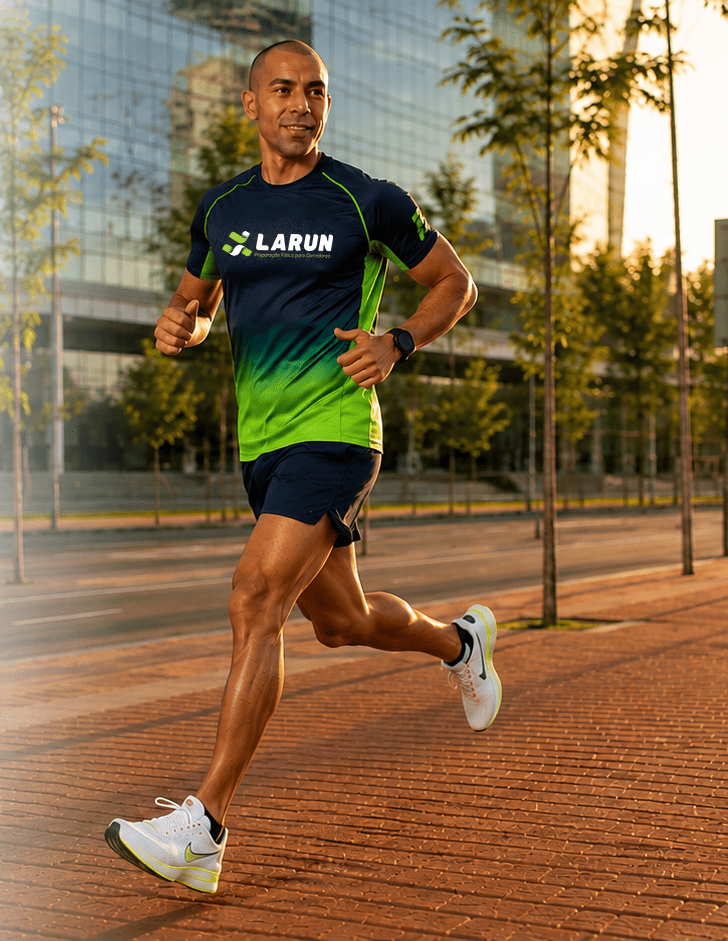
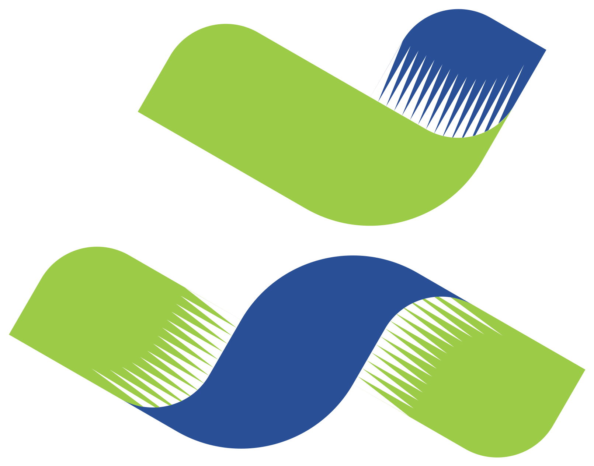
Estúdio e Grupo de Corrida · SBC
Não é academia. Não é assessoria online. É o Método LARUN: evolução estruturada, presencial, com diagnóstico antes da prescrição e professor sempre presente.
Gratuito · ~7 min · online · sem compromisso
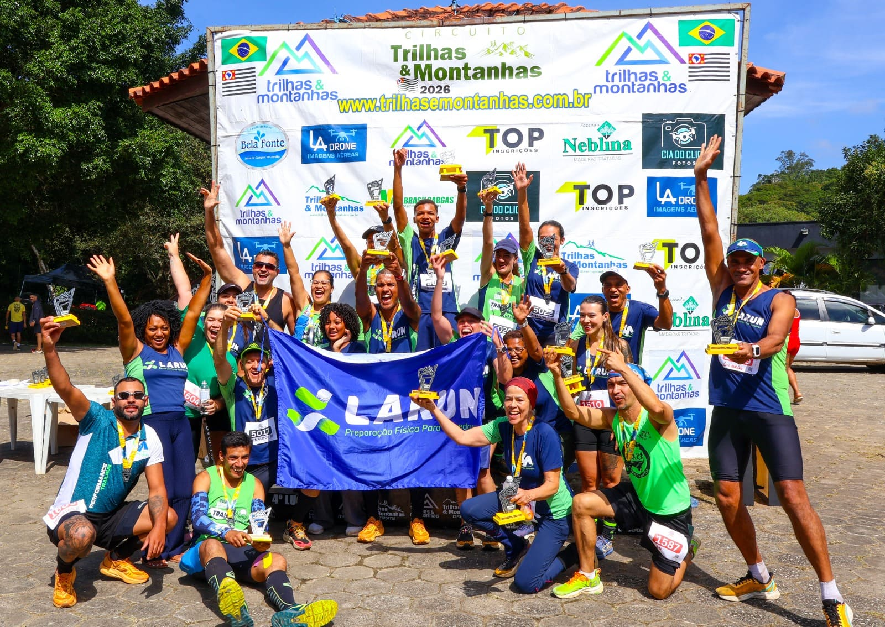
Corredores treinados
Pilares do método
Fases do corredor
Acompanhamento presencial
O Método LARUN
Correr com menos impacto, menos tensão e mais eficiência. Mobilidade articular, ativação do core, redução de sobrecarga. O resultado prático é menos força desperdiçada e mais fluidez.
Correção do padrão biomecânico e fortalecimento específico para corrida. Educativos de corrida, exercícios de resistência e amplitude de movimento. Sem treinos genéricos.
Construção de base real, respeitando o tempo do corpo. Volume e intensidade progressivos, treinos de alta intensidade, pliometria e velocidade. O objetivo é durar mais, não ir mais rápido agora.
Confiança se treina. O corredor aprende a escutar o corpo sem travar por medo. Controle emocional, resiliência, visualização e consistência com feedback contínuo.
Cada corredor no seu momento. Estruturação de metas realistas, planejamento individualizado, ajustes de técnica e estratégias de recuperação. Sem comparação, sem pressa.
Não é atleta de elite. É o corredor que corre com segurança, consistência e longevidade, ciclo após ciclo.
Quem criou o Método LARUN
Aos 18 anos, um diagnóstico de Condromalácia encerrou suas corridas e trilhas. Os médicos disseram que esporte de impacto estava fora de questão. Em vez de aceitar, ele decidiu entender.
Estudou Educação Física, fez pós-graduação em Reabilitação Física e passou os anos seguintes mapeando o que realmente previne lesões e sustenta evolução.
O resultado foi o Método LARUN: 5 pilares desenvolvidos ao longo de mais de 11 anos, testados com 673 corredores de todos os níveis. O método que ele teria querido ter quando foi diagnosticado.
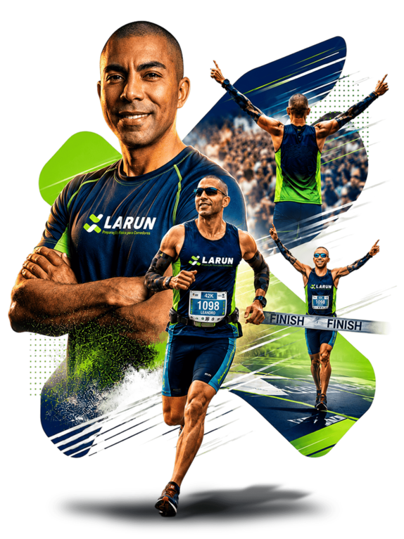
As Fases do Corredor
Selecione sua distância
"5k ficou fácil. 10k você termina. Mas toda vez que tenta ir além, o corpo diz que não."
Termina as provas, nada quebrado. Mas corre no improviso, sem saber se constrói base ou só gasta energia. A sensação é de teto de vidro: você força, mas não passa.
Ir além dos 10k com método. Sair do improviso e entrar em progressão real, com a certeza de que o corpo aguenta o próximo salto, sem recomeçar do zero por lesão.
O papel do RaioX: Não é para ver onde você está errando. É para descobrir o que falta no seu corpo para ir onde você já decidiu que vai, sem quebrar no meio do caminho.
Agendar meu RaioX"Você não é iniciante. Isso é exatamente o problema, porque você já não aceita treinar como um, mas ainda não sabe o que está travando."
Treina com frequência. Chega na meia. Mas o pace não baixa e o volume não sobe sem o corpo reagir. A frustração é silenciosa: meses de esforço que não converteram no que deveriam.
O próximo nível de pace ou distância, com diagnóstico real do que está travando. Não mais volume do mesmo treino que já não funciona. Evolução com inteligência, não com insistência.
O papel do RaioX: Não é falta de esforço. Quem chega na meia não tem déficit de dedicação. O que falta é diagnóstico real do que está impedindo o próximo nível.
Agendar meu RaioX"Você cruzou a linha dos 42k. Sabe o que isso custa. E sabe que o corpo que te trouxe até aqui não é o mesmo que vai te levar à próxima."
Maratona no currículo. Identidade sólida de corredor. Mas cada ciclo de preparação exige mais. A recuperação demora mais. E a consciência de que a ambição não vai diminuir, mas o corpo pode não acompanhar.
Continuar correndo maratonas por anos, sem pagar um preço crescente a cada ciclo. A próxima maratona com menos custo físico do que a última. Longevidade é a meta real.
O papel do RaioX: Corredor não precisa ser convencido de que método importa. Precisa saber o que o corpo aguenta de verdade, e o que já está sendo exigido além do limite.
Agendar meu RaioXHorário marcado, professor sempre presente, sem superlotação.
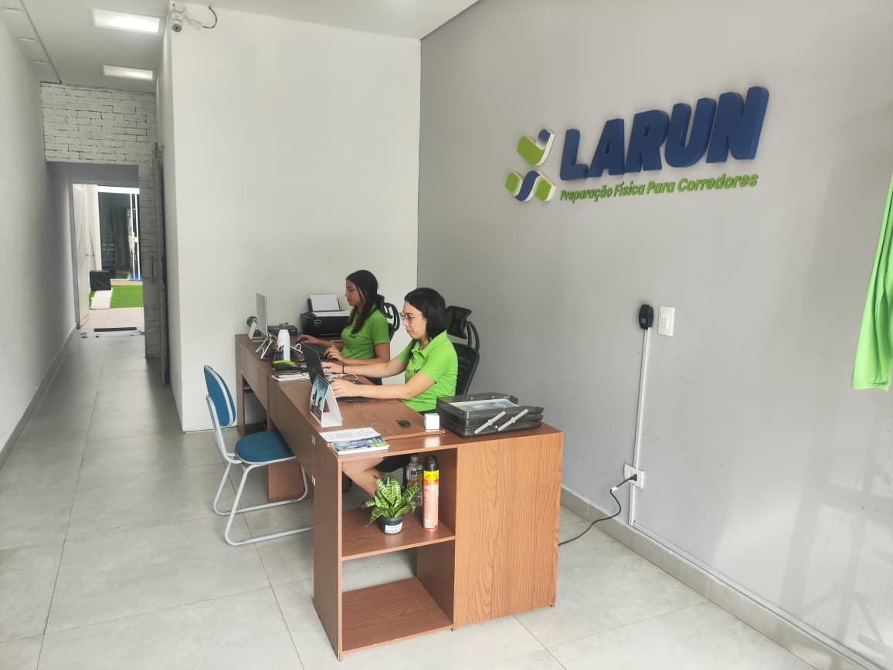

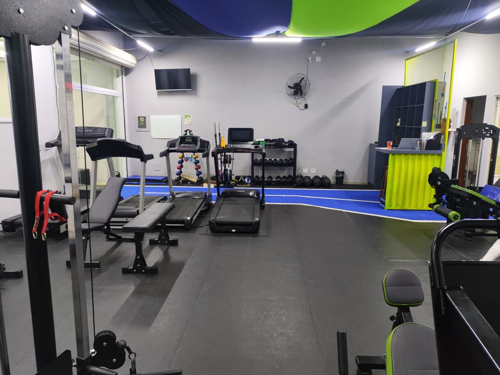
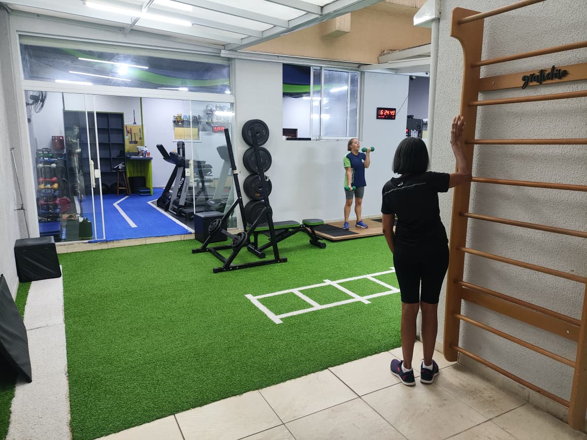

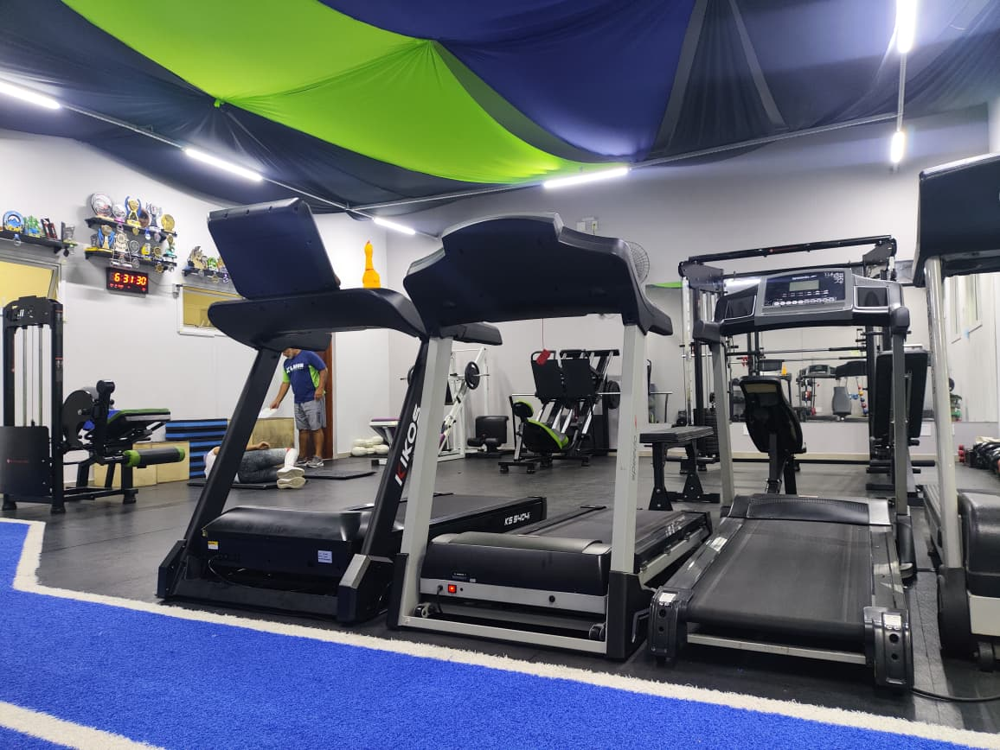


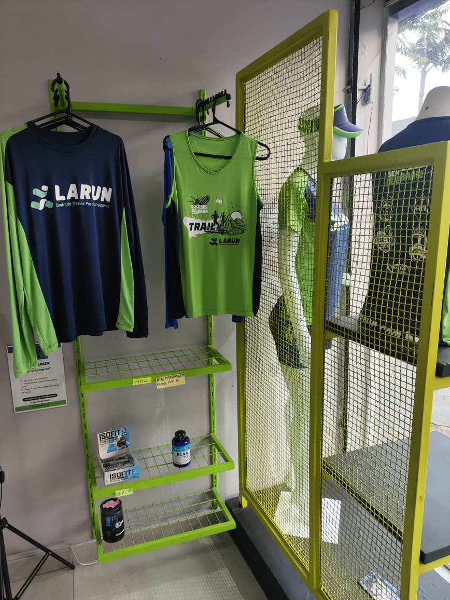

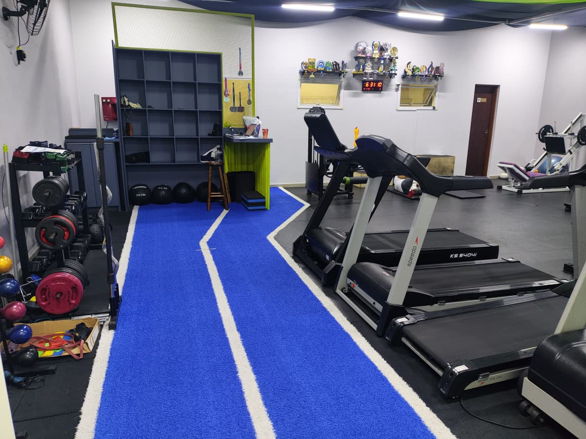
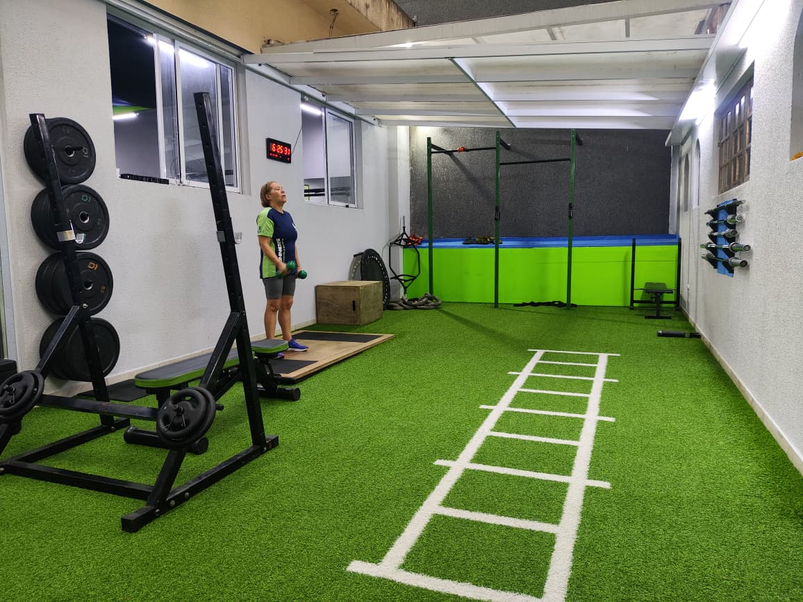


Prova social
Dos primeiros quilômetros à maratona, centenas de corredores já evoluíram com o Método LARUN.
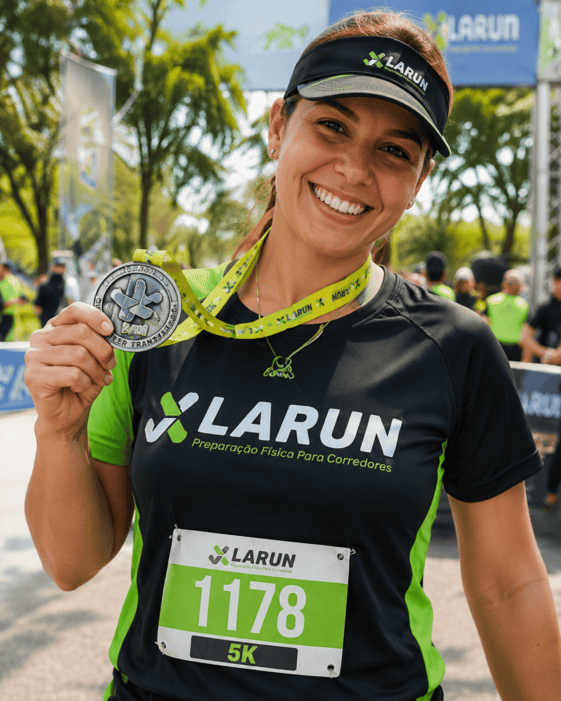
Mariana SilvaHoje já corre distâncias que antes pareciam impossíveis.
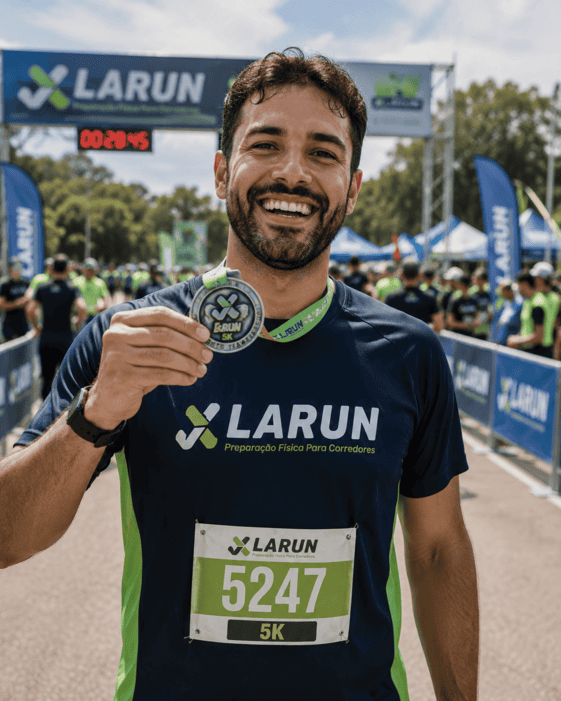
Eduardo SantosDescobriu que era capaz de ir muito além do que imaginava.
Evoluiu ritmo, técnica e confiança.
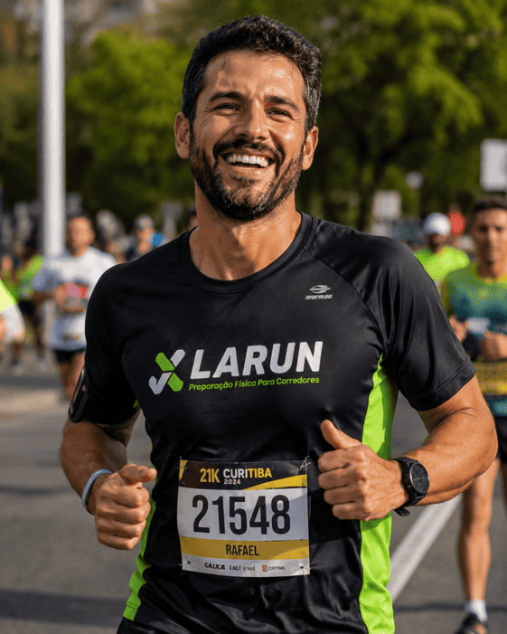
Rafael SouzaHoje cruza a linha de chegada com segurança.
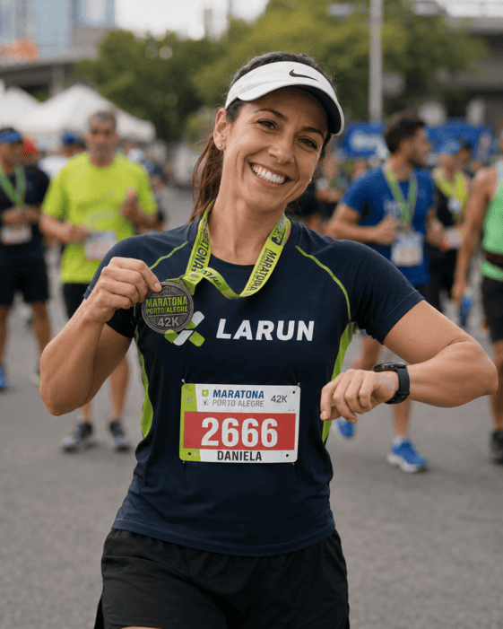
Daniela RochaPlanejamento e constância fizeram a diferença.
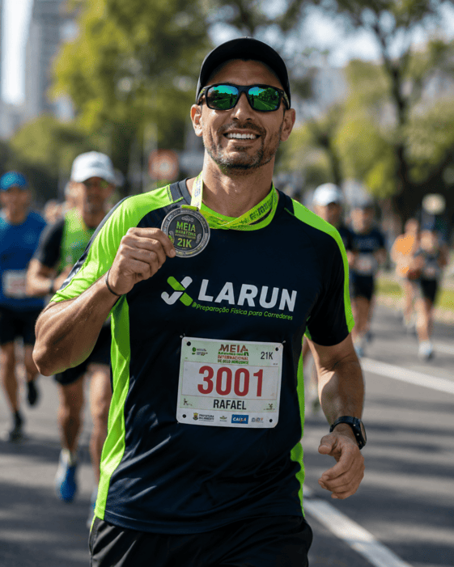
Rafael LimaQuem busca evolução contínua também encontra espaço na LARUN.
Resultados no dia a dia
Histórias reais de corredores que transformaram seus treinos e alcançaram muito mais com o Método LARUN.
"Nunca pensei que seria maratonista."
Ela não queria correr mais. Queria correr melhor.
Sem dor. Sem medo. Sem travar.
E conseguiu.
"Eu achava que precisava treinar mais."
Ele não precisava treinar mais. Precisava treinar melhor.
Sem exagero. Sem desgaste. Sem repetir erro.
E conseguiu.
Seja qual for o seu momento na corrida, existe um próximo objetivo esperando por você. E ele pode começar com o Método LARUN.
Planos
O plano certo é definido no RaioX. Os valores abaixo são a partir de, no pagamento anual via PIX.
Base e estrutura para iniciantes que buscam correr com segurança.
Foco em 5K e 10K com evolução estruturada e progressão real.
Preparação para meia maratona e maratona. 21K / 42K.
Preparação completa para trail running competitivo.
Corredor não precisa ser convencido de que método importa. Precisa saber o que o corpo aguenta de verdade, e o que já está sendo exigido além do limite. Fale com um especialista da equipe LARUN e saia sabendo o que ajustar e qual plano seguir.
Tão importante quanto travar no treino é travar na escolha. Aqui está cada dúvida, respondida sem enrolação.
Pensa no outro lado: quanto custa uma fisioterapia? Quanto custa ficar parado 3 meses por lesão? A LARUN é investimento em longevidade. O plano mais acessível começa em R$ 159/mês. O custo de treinar sem diagnóstico costuma ser medido em semanas de afastamento — não em mensalidade.
A diferença está no ponto de partida. A maioria começa com planilha. A LARUN começa com diagnóstico — identificando o que travou antes de prescrever o que vem a seguir. E tem professor presente em todos os treinos. Não é assessoria à distância.
Planilha sozinha não identifica padrão de movimento errado. Não corrige deficiência estrutural. Não previne a lesão que aparece quando você sobe volume sem base. Se o objetivo é evoluir com segurança e durar correndo, vale a conversa no RaioX — sem compromisso.
Exatamente por isso o modelo de horário marcado existe. Você agenda no melhor horário, treina com método dirigido e sai. Não é academia que exige horas. E o RaioX que começa tudo é rápido.
O RaioX não substitui seu treinador. É o diagnóstico estrutural que todo plano deveria ter como base — e que a maioria dos treinadores não tem ferramentas presenciais para fazer. Os dois juntos são vantagem.
Não existe nível de entrada errado. O RaioX identifica onde você está agora, não onde deveria estar. O método se ajusta ao seu corpo — não o contrário. Quem trava não é quem começa devagar. É quem tenta seguir um plano genérico que não foi feito para ele.
Diagnóstico antes de prescrição. Professor presente em todos os treinos. Método estruturado em cinco pilares que evoluem junto com você.
Quero minha avaliação gratuitaPerguntas Frequentes
O RaioX LARUN é uma conversa estratégica gratuita, com cerca de 7 minutos, realizada por ligação ou videochamada com um especialista da nossa equipe.
O objetivo não é vender um plano. É entender o seu momento na corrida e mostrar qual caminho faz sentido para você seguir com mais segurança e clareza.
Também não é uma avaliação técnica completa.
O RaioX é uma conversa estratégica para entender seu histórico, seus objetivos e identificar se existe alguma limitação que merece atenção antes de indicar qualquer programa.
Na LARUN, acreditamos que primeiro vem o diagnóstico. Só depois faz sentido falar sobre treino.
Na verdade, é justamente quem está começando que mais se beneficia dessa conversa.
Muitos corredores iniciam treinando no improviso. O problema é que os erros normalmente aparecem apenas quando o volume aumenta.
O RaioX ajuda você a entender qual é o melhor ponto de partida para construir uma evolução consistente, sem precisar descobrir os erros quando eles já viraram dor ou lesão.
Quanto mais experiência você tem, mais importante fica saber se o esforço que está fazendo está indo na direção certa.
Muitos corredores treinam há meses, ou até anos, sem conseguir evoluir no pace ou aumentar a distância porque existe um fator estrutural que nunca foi identificado.
O RaioX existe justamente para trazer essa clareza antes que você continue insistindo na mesma estratégia.
A conversa dura aproximadamente 7 minutos.
É um encontro rápido, online, pensado para entender seu momento na corrida e orientar o próximo passo de forma objetiva.
Você pode fazer pelo celular ou pelo Google Meet, sem precisar sair de casa.
Depois da conversa, o especialista explica o que observou e orienta qual caminho faz mais sentido para o seu momento.
Se houver aderência ao Método LARUN, ele apresenta o programa mais indicado para seus objetivos.
Se não fizer sentido seguir agora, você ainda termina a conversa com uma visão muito mais clara sobre sua corrida.
Um dos princípios da LARUN é nunca prescrever um treino antes de entender quem é o corredor.
Seria como tentar resolver um problema sem saber sua causa.
Por isso, todo o processo começa pelo RaioX: uma conversa rápida para compreender seu momento e indicar o caminho mais adequado para você.
O RaioX não gera nenhuma obrigação de matrícula.
Nosso objetivo é que você tome uma decisão com clareza, entendendo o seu momento e sabendo qual direção faz mais sentido para a sua evolução.
Se decidir seguir conosco, ótimo. Se preferir esperar, a decisão continua sendo sua.
Porque uma aula mostra como é treinar. O RaioX mostra por que você precisa treinar de determinada forma.
Na LARUN, acreditamos que o maior erro não é treinar pouco. É treinar sem entender o que realmente está limitando sua evolução.
Por isso, antes de qualquer plano ou prescrição, o primeiro passo é compreender seu histórico, seus objetivos e o seu momento atual. Esse princípio — diagnóstico antes da prescrição — é a base do Método LARUN.
Agende Agora
Não é aula experimental. É um diagnóstico para descobrir o que falta no seu corpo para chegar onde você já decidiu que vai — sem quebrar no meio do caminho.
"Eu corro sem quebrar. E você?"